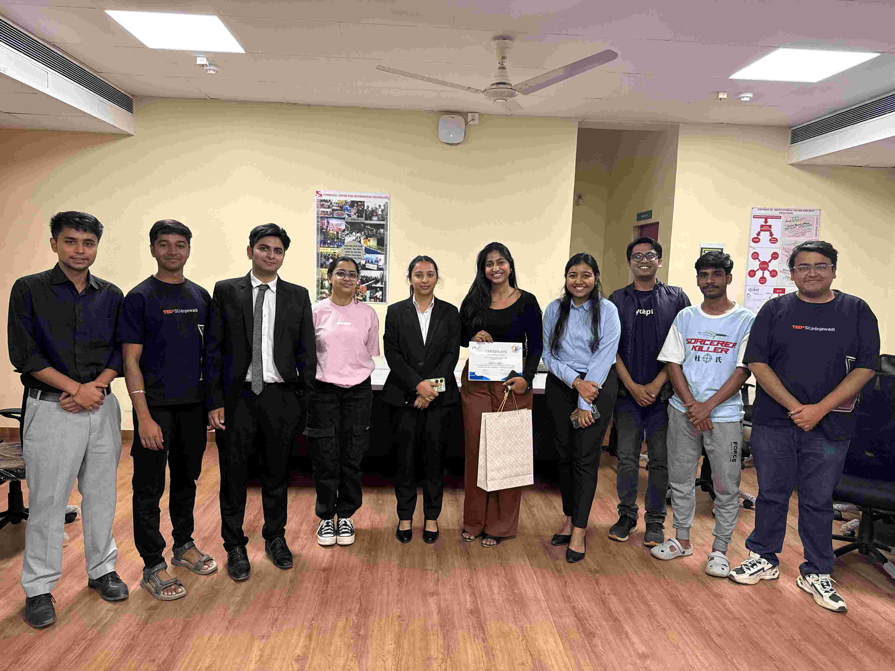
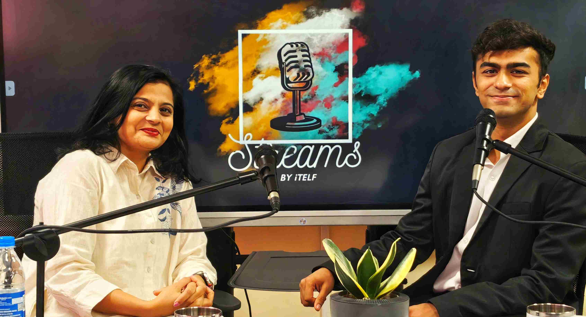
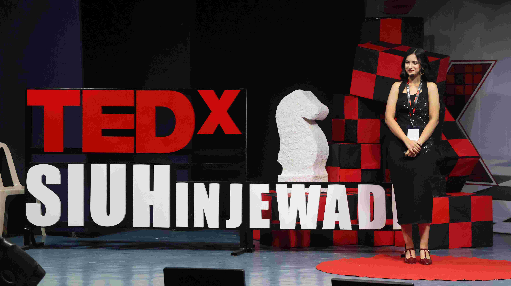
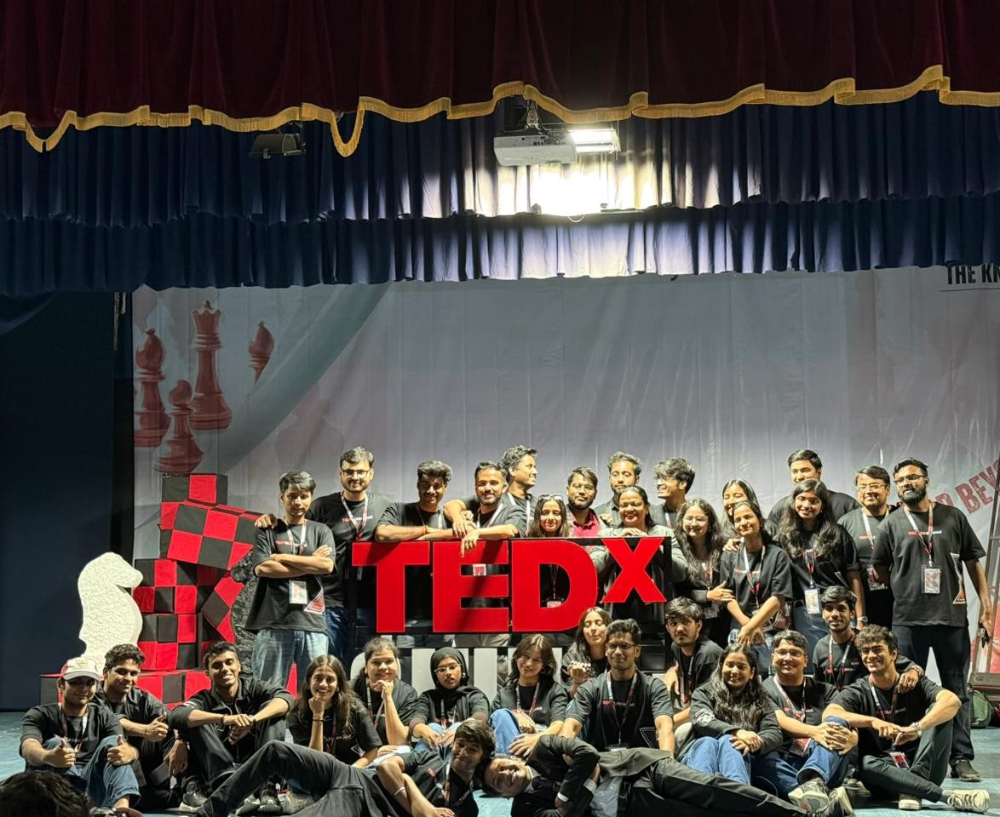

Listen
Stories behind the polished outcome.
Hear the decisions, trade-offs and turning points that never make it into the final headline.

SCIT's - Information Technology entrepreneurship and leadership forum
There is always a moment before something remarkable exists — when it's nothing more than a wild question, a rough sketch, or an idea nobody quite understands yet. That's the moment we live for. The rest? We make inevitable.
what if
we actually
did this?
okay.
hear me
out.
this is
getting a little
too real.
wait—
people are
actually coming.
look at that.
we made
it happen.
Ideas do not grow in isolation.
Entrepreneurship begins long before a company does. It begins with curiosity — the courage to question what exists and the drive to imagine what could. At iTELF, we bring together ideas, people and perspectives through experiences that inspire conversations, challenge thinking and encourage students to create something of their own.

Creation. Reflection. Inflection.
Pitch a venture, build a product, negotiate a crisis. Five competitions that put ideas in front of real business problems.
Explore Sprout'IT →Your venture. An investor panel. A seven-minute pitch.
Diplomacy & debate
Product design & strategy
Decisions under pressure
Clues, logic & investigation
For founders, beyond the event
A practical directory of official startup portals, benefits, funding calls, incubators and founder support. Search by need, compare routes and continue directly with the organisation that runs each programme.
Loading the startup resource directory…
This directory is a self-serve starting point, not a promise of funding or eligibility. Schemes, benefits, deadlines and application routes can change; confirm current criteria on the official website before applying. iTELF does not administer these programmes. Resource catalogue last reviewed 13 October 2026.
Ideas, voices & perspectives
STREAMS brings founders, leaders, creators and industry voices into the room—so students can hear the thinking behind real decisions, challenge assumptions and carry one useful idea into action.
Hear the decisions, trade-offs and turning points that never make it into the final headline.
Make space for the uncomfortable question—the one that changes what the room notices next.
Bring a different lens to the problem and test the easy answer before it becomes the default.
Leave with a thought worth testing, a contact worth following and an idea worth carrying into action.

Independently organized TED event
Ideas worth spreading
TEDxSIUHinjewadi brings together speakers and the audience ready to listen, question and leave with something worth carrying forward.






The teams behind iTELF.
Connect with speakers and investors, manage invitations, and coordinate their participation.
Design event creatives, manage social media, and keep our websites up to date.
Plan and run events, from the first idea to logistics, volunteer coordination and execution.
Build sponsor relationships, develop proposals, and deliver on partnership commitments.